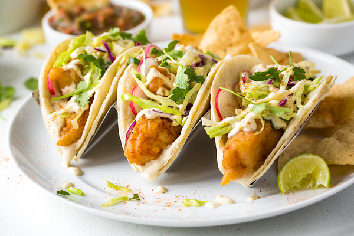

Delicious Fish Tacos Recipe
Ingredients:
- 4 white fish fillets (cod, tilapia, or mahi-mahi)
- 1 teaspoon chili powder
- ½ teaspoon cumin
- ½ teaspoon garlic powder
- ½ teaspoon salt
- ¼ teaspoon black pepper
- 2 tablespoons olive oil
- 8 small corn tortillas
- 1 cup shredded cabbage
- ½ cup diced tomatoes
- ½ cup chopped cilantro
- 1 avocado, sliced
- ½ cup sour cream or Greek yogurt
- 1 tablespoon lime juice
Instructions:
- Preheat grill or pan to medium-high heat.
- Mix chili powder, cumin, garlic powder, salt, and pepper in a bowl.
- Rub seasoning onto fish fillets and drizzle with olive oil.
- Grill fish for 3-4 minutes per side until flaky.
- Warm tortillas and assemble with fish, cabbage, tomatoes, cilantro, and avocado.
- Mix sour cream with lime juice and drizzle over tacos.
- Serve fresh with lime wedges.